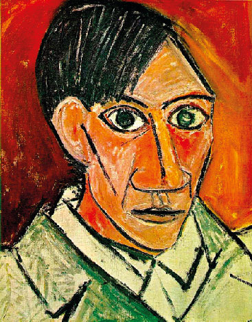

Pablo Picasso
Pablo Picasso (1881–1973) fue un pintor y escultor español, considerado uno de los artistas más influyentes del siglo XX. Nació en Málaga y desde joven mostró un talento excepcional para el dibujo. Vivió gran parte de su vida en Francia, donde desarrolló junto a Georges Braque el movimiento cubista, revolucionando la manera de representar la realidad. Su obra es inmensa y diversa: pasó por períodos como el Azul, el Rosa, el Cubismo, el Neoclasicismo y el Surrealismo, siempre innovando y desafiando las normas del arte tradicional
Identidad más allá de la apariencia
La pintura muestra el estilo cubista y expresionista de Picasso, donde la figura humana se descompone en formas geométricas y planos superpuestos. El rostro aparece difuminado y fragmentado, lo que transmite una sensación de anonimato y despersonalización, típica de la búsqueda cubista por mostrar múltiples perspectivas en una sola imagen. El fondo rojizo y las pinceladas enérgicas refuerzan la intensidad emocional de la obra, mientras que la simplificación de las formas convierte al retrato en una exploración más intelectual que realista
Obras Destacadas